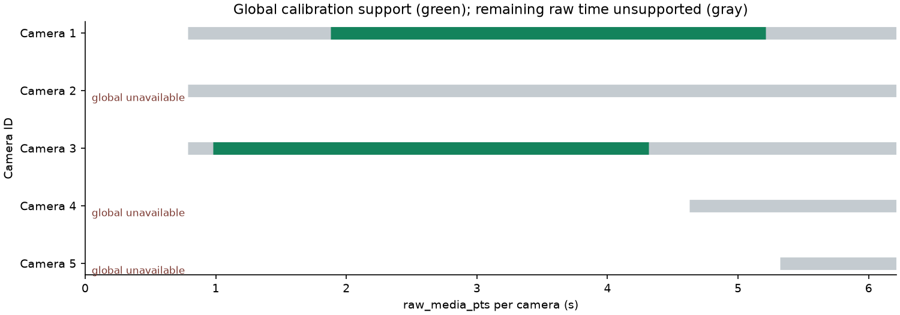
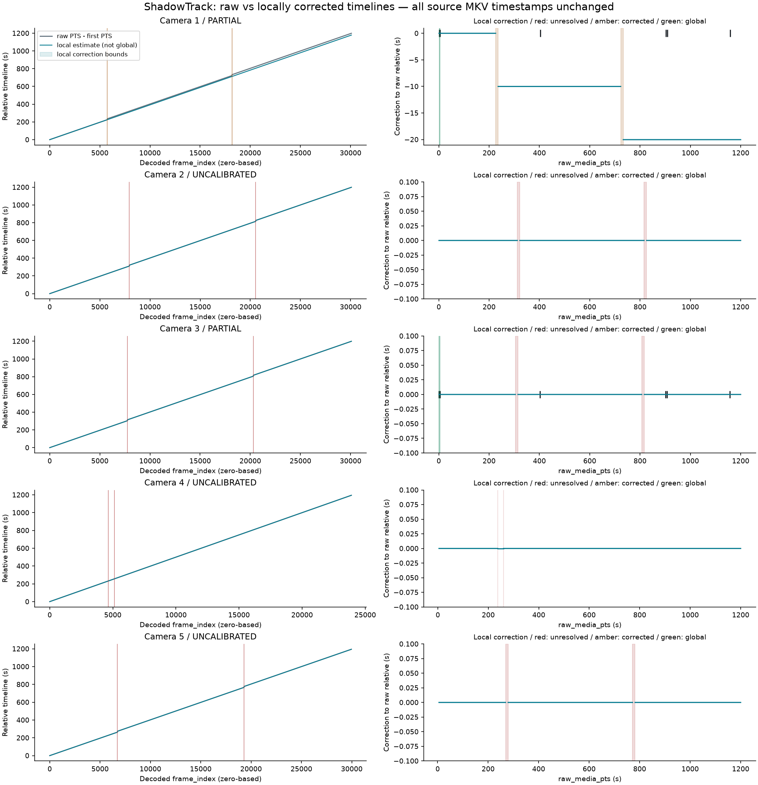
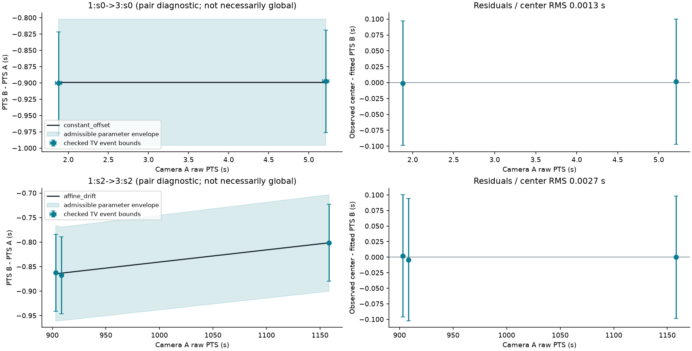
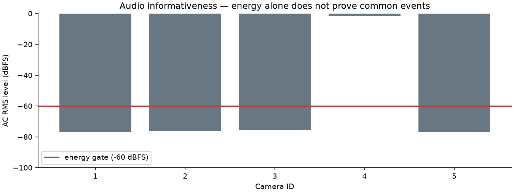

ShadowTrack / Time Alignment Engine
Acceptance: PARTIAL · связаны 2 / 5 камер
Глобальное время доступно только внутри поддержанных областей. Неподтверждённые участки возвращают unavailable. Численные интервалы — допустимые границы модели, а не статистические доверительные интервалы.
time_alignment.json · TIME_ALIGNMENT.md
Шкалы времени
raw_media_pts: исходное время MKV. frame_index: индекс декодированного кадра. relative_capture_time_estimate: отдельная локальная оценка с исправлением только проверенных разрывов; физический масштаб не подтверждён. synchronized_global_time: условная общая шкала по проверенным событиям. uncertainty: интервальные границы с источником и допущениями.
Основа глобальной шкалы: arbitrary relative seconds from first decoded frame of camera 3, first uninterrupted epoch; NOT UTC. Время UTC и абсолютное время съёмки не установлены.
Доступность по камерам
Точные границы доступности проверяет API с учётом неопределённости пути. Остальная длительность — unsupported. Разрывы PTS не заполняются вымышленными наблюдениями.

Raw и локально исправленная шкалы

Парные модели
Поздняя парная модель может быть поддержана в собственном сегменте, но оставаться недоступной в первой глобальной эпохе. Между эпохами неизвестного разрыва точная связь не предполагается.

Проверка аудио
NO_RELIABLE_SHARED_EVIDENCE. Декодирование и отдельный audio-only probe не повторяют video probe. PCM каналы проверены по отдельности. Межпоточная A/V задержка не подтверждена; отсутствие общего слышимого события не является отрицательной проверкой синхронности.

Anchors и решения
- audit_tv_A: checked=True; accepted=True; {'1': [1.84, 1.918], '3': [0.94, 1.018]};
- audit_tv_B: checked=True; accepted=True; {'1': [5.172, 5.251], '3': [4.275, 4.353]};
- sync_middle_tv_cut: checked=True; accepted=True; {'1': [402.932, 403.089], '3': [402.056, 402.213]};
- sync_late_tv_cut_A: checked=True; accepted=True; {'1': [902.922, 903.0], '3': [902.059, 902.138]};
- sync_late_tv_cut_B: checked=True; accepted=True; {'1': [908.293, 908.372], '3': [907.426, 907.504]};
- sync_end_tv_cut: checked=True; accepted=True; {'1': [1158.197, 1158.276], '3': [1157.396, 1157.474]};
- tv_before_jumps_100: checked=False; accepted=False; {'1': None, '3': None}; unchecked
- tv_middle_400: checked=False; accepted=False; {'1': None, '3': None}; unchecked
- tv_after_jumps_900: checked=False; accepted=False; {'1': None, '3': None}; unchecked
- tv_late_1150: checked=False; accepted=False; {'1': None, '3': None}; unchecked
- Unresolved gaps retain raw duration and have no interior mapping.
- Confirmed clock jumps are local estimates only, never automatic inter-camera anchors.
- Models are fitted separately for each pair of uninterrupted timestamp segments.
- Unchecked events and uninformative audio cannot calibrate cameras.
- A single initial offset is not extended beyond checked anchor support.
Все исходные MKV, DATA_AUDIT.md и сохранённый video probe остаются неизменными. Detection, Re-ID и global tracking не запускались.